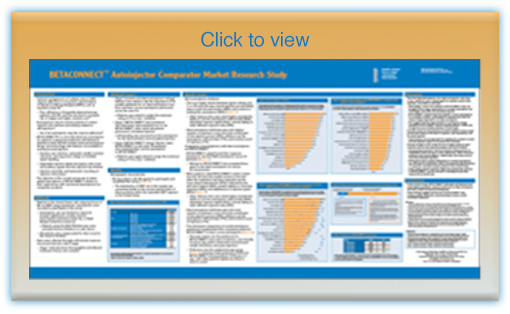

BETACONNECT
Comparative Survey
Feedback on the BETACONNECT autoinjector from physicians, nurses and patients who have been using the device has been overwhelmingly positive. To gain perspective from patients using competitive injectable products, Bayer HealthCare recently performed a market research study to assess these patients’ perceptions of BETACONNECT relative to their current autoinjector.

Study Overview
The survey involved 90 participants and relied on in-person, one-hour qualitative interviews at facilities across the US. Recruitment for the study was restricted to patients currently utilizing a competitive autoinjector: Copaxone Autoinject, Extavia Auto-Injector or Rebif Rebiject.
Participants were first asked to rank 18 possible attributes of an ideal autoinjector and then rate how their current device performs against this same list. The interviewer then demonstrated the BETACONNECT device and had the patients perform simulated self-injections. Following the simulation, patients then rated BETACONNECT, first utilizing the same 18 attributes and then comparing BETACONNECT to their current autoinjector.

Participant Responses
Overall, patient preference for BETACONNECT over competitor mechanical autoinjectors was extremely strong and device feedback was positive. Additionally, many features unique to BETACONNECT were rated very highly by all participants.
Across the board, BETACONNECT outperformed both Copaxone and Rebif autoinjectors and exceeded almost all ratings that patients gave to their ideal device. Results also illustrated that 83% of patients preferred BETACONNECT to their current device. Attributes that contributed to the preference included:
- Ease of injection
- User friendliness
- Quiet injections
 Bayer HealthCare finds these results to be highly encouraging. The feedback obtained illustrates that BETACONNECT not only provides an improved experience over competitive devices but it also exceeds patients’ expectations.
Bayer HealthCare finds these results to be highly encouraging. The feedback obtained illustrates that BETACONNECT not only provides an improved experience over competitive devices but it also exceeds patients’ expectations.
The key strength of this survey was the in-depth nature of each interview and Bayer appreciates the time each patient spent with the BETACONNNECT autoinjector.
Sharing Our Results
Recent publications and presentations of the data include:
 A poster presentation of at cMSc BETACONNECT Autoinjector Comparator Market Research Study

Published data in Neurology and Therapy Survey of US Patients with Multiple Sclerosis: Comparison of the New Electronic Interferon Beta-1b Autoinjector (BETACONNECT™) With Mechanical Autoinjectors
Bayer HealthCare is exploring avenues to share these findings with physicians, nurses and patients. Future communications could include digital outreach programs or social media platforms.